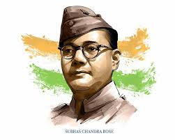

Netaji Subhas Chandra Bose ji |

Netaji Subhas Chandra Bose ji was one of the most dynamic and fearless leaders of India’s independence movement. Born on January 23, 1897, in Cuttack, Odisha,he became known for his leadership and revolutionary ideas. Bose was the founder of the Azad Hind Fauj (Indian National Army) and fought relentlessly to free India from British rule.
His powerful speeches, especially his famous call "Give me blood, and I will give you freedom," inspired countless Indians to join the struggle for independence. His mysterious disappearance in 1945 remains one of the greatest unsolved mysteries of Indian history.
| Born | January 23, 1897 (Cuttack, Odisha) |
|---|---|
| Known For | Founder of Azad Hind Fauj (Indian National Army). |
| Famous Slogan | Give me blood, and I will give you freedom. |
| Martyrdom | August 18, 1945 (reported plane crash – still debated) |